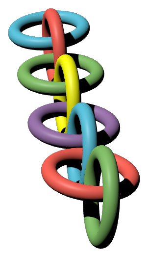

Threads｜ManimGX：為 AI Agent 設計的 Rust／wgpu 3D 動畫引擎查核

一句話摘要
ManimGX 不是讓模型「直接憑空做動畫」的封閉服務，而是讓人或 AI coding agent 以 Python 撰寫場景、再交由 Rust／wgpu 核心輸出 MP4 的開源動畫引擎。它瞄準的是可程式化、可檢查、可反覆修改的數學與 3D 解說動畫工作流；速度數字很亮眼，但只代表官方列出的特定場景、硬體與設定，不能直接套用到所有動畫。
社群貼文的核心主張
Threads 帳號 `kufutw` 將 ManimGX 介紹為適合 Claude Code、Codex、Cursor 等 Agent 產生 Python 動畫程式的 2D／3D 引擎，並提出以下重點：
- 在 Apple M4 Pro 上，36.2 秒、1080p60、五個場景的影片，輸出耗時 3.08 秒。
- 同一官方 benchmark 宣稱較 Manim Community Edition 快 90.6 倍、較 ManimGL 快 11.5 倍。
- Rust + wgpu GPU 核心，並相容 Manim 的 Python API。
- `manimgx inspect` 可產生分鏡及 2D 版面檢查；`self.say()` 可做旁白同步與字幕輸出。
- 以 Python 3.13+、macOS／Windows／Linux 為安裝目標，並主張可經 Pyodide + WebGPU 在瀏覽器執行。
上述大部分可從官方 README、PyPI 與文件交叉確認；但「快 90 倍」是 benchmark 結果，不是每一台電腦、每種動畫或每個專案的服務水準協議。
官方可確認的產品範圍
截至本次擷取，`academa-labs/manimgx` 為公開、未封存的 GitHub repo，GitHub API 顯示其程式碼採 MIT License；PyPI 已上架 `manimgx 0.1.1`。官方定位是「供 Agent 使用的快速數學與 3D 動畫引擎」，包含：
- **Python API 與 Manim CE 對齊方向**：可用 scenes、2D／3D、文字、方程式、曲線、表面與移動鏡頭等程式化構成動畫。
- **Rust + wgpu 渲染核心**：原生 GPU 渲染，並在瀏覽器模式下以 WebGPU 處理畫面。
- **本機與瀏覽器兩條路徑**：官方 README 列出 macOS、Linux、Windows 的 pip 安裝，以及 npm／Pyodide browser worker 的做法。
- **Agent 可讀文件**：`llms.txt` 彙整安裝與文件入口；這是降低 Agent 查閱文件成本的設計，不表示 Agent 產出的內容自動正確或安全。
- **可視化驗收**：`manimgx inspect` 提供 storyboard 和 2D layout checks；它可協助找出文字重疊、超出畫面或字體過小，但仍需要人看實際影片、檢查事實和教學敘事。
- **語音對時**：官方列出 `self.say()`，將動畫時間對齊口語字詞，並可處理字幕。
90.6 倍到底代表什麼
官方 README 寫明 benchmark 為：五個場景共 36.2 秒的 1080p60 動畫，在 Apple M4 Pro 上，從啟動到完成 MP4，ManimGX 用時 3.08 秒；作為同一測試設定的對照，ManimCE 為 278.83 秒、ManimGL 為 35.28 秒。官方也公開 benchmark 場景、設定與每次執行資料，這比只貼數字更容易檢視。
但做採用判斷時，仍要保留四個限制：
- **硬體與 driver 會改變結果**：M4 Pro 的 GPU、記憶體與圖形堆疊不代表所有 Windows、Linux、CPU fallback 或雲端環境。
- **場景結構不同**：文字、LaTeX／Typst、3D mesh、透明效果、匯入影像／音訊、特效與編碼設定的瓶頸不同。
- **比較範圍有限**：這是特定場景與最快可用 encoding preset 的工程比較，不是對 ManimCE／ManimGL 所有 API、品質、擴充生態或除錯成本的全面排名。
- **先測你自己的任務**：拿一個可公開的 30–60 秒教學場景，同時量測首幀、全片、重跑、修改一行後重渲染、畫面品質與人工修正時間，才是實際工作流的成本。
與既有 Manim 工作流如何選
ManimGX 適合：要把動畫當作「Python 程式＋可驗收 MP4」處理、想做數學／資料／3D 概念短片、且希望 coding agent 能讀文件、寫程式、取得分鏡回饋並反覆修正的人。
Manim Community Edition 仍適合：已有成熟 Manim CE 專案、教學資源與相容插件依賴，或要優先使用其既有生態的人。ManimGX 官方說明其目標為相容 Manim CE API，而非宣稱每個場景與外掛都已完全等價；遷移前應先跑自己的代表場景與測試。
給 AI Agent 的最小可行流程
- **先寫教學規格，不先要影片**：列出受眾、唯一學習目標、要避免的迷思、30–60 秒分鏡、旁白與需要引用的來源。
- **只在隔離專案資料夾操作**：讓 Agent 僅讀寫新的 scene 檔、輸出影片與 preview；不要給整個家目錄、雲端硬碟或不相關憑證。
- **固定環境**：記錄 Python、ManimGX、GPU／driver、OS、字型與輸出參數版本。這是可重現速度與修正差異的前提。
- **先 preview 再高品質輸出**：用 `inspect` 或低成本畫面檢視檢查裁切、重疊、字級、鏡頭與字幕時間；確認後才輸出正式 MP4。
- **人類驗收三件事**：概念有沒有說對、視覺焦點是否清楚、旁白／字幕與動畫是否真的同步。排版檢查無法取代內容正確性。
- **保留授權與來源紀錄**：素材、音訊、字型、模型生成內容與輸出檔都要記錄來源和可使用範圍。
授權：程式碼 MIT，不等於每個發行檔都只受 MIT 約束
官方 LICENSE 是 MIT，方便檢視、修改與再散布程式碼。不過 README 同時寫明：含有 x264 的 native wheels 整體為 GPL-3.0-or-later；另外也帶有 FFmpeg、字型與其他第三方元件的個別通知。
因此：
- 用 source、發布 Python 套件、Docker、npm 或嵌入產品可能面對不同的相依與散布情境。
- 把它整合進商業軟體、提供封閉式發行、修改再散布或內嵌 encoder 前，先由具體發行方式檢閱 `LICENSE`、third-party notices 與 release source package。
- 本文是技術查核，不是法律意見；不應只因 repo 標示 MIT 就略過 binary／copyleft 依賴的義務。
原始與查核連結
- Threads 原貼文：https://www.threads.com/@kufutw/post/DeYrXuAn_tc
- ManimGX GitHub：https://github.com/academa-labs/manimgx
- PyPI：https://pypi.org/project/manimgx/
- 官方文件：https://manimgx.academa.ai
- Agent 文件入口：https://manimgx.academa.ai/llms.txt
- 官方 benchmark 場景與設定：https://github.com/academa-labs/manimgx/tree/main/benchmarks
- 授權檔：https://github.com/academa-labs/manimgx/blob/main/LICENSE